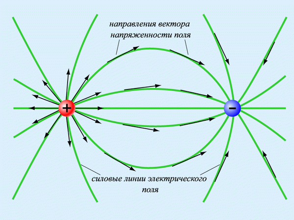
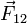
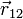

1.1.4. Теоретические основы электротехники. Электрическое поле
Электротехника — область технических наук, изучающая получение, распределение, преобразование и использование электрической энергии. Электротехника выделилась в самостоятельную науку из физики в конце XIX века. В настоящее время электротехника включает в себя несколько наук: электроэнергетику, электронику, системы управления, обработку сигналов и телекоммуникации. Основное отличие от электроники заключается в том, что электротехника изучает проблемы, связанные с силовыми крупногабаритными электронными компонентами: линии электропередачи, электрические приводы, в то время как в электронике основными компонентами являются компьютеры и интегральные схемы, т.е., в электротехнике основной задачей является передача электрической энергии, а в электронике — информации.
Электрическое поле — одна из составляющих электромагнитного поля; особый вид материи, существующий вокруг тел или частиц, обладающих электрическим зарядом, а также в свободном виде при изменении магнитного поля (например, в электромагнитных волнах).
Электрическое поле непосредственно невидимо, но может наблюдаться благодаря его силовому воздействию на заряженные тела. Для количественного определения электрического поля вводится силовая характеристика — напряжённость электрического поля.
Напряжённостью электрического поля называют векторную физическую величину, равную отношению силы, с которой поле действует на положительный пробный заряд, помещённый в данную точку пространства, к величине этого заряда. Направление вектора совпадает в каждой точке пространства с направлением силы, действующей на положительный пробный заряд.
В классической физике, применимой при рассмотрении крупномасштабных (больше размера атома) взаимодействий, электрическое поле рассматривается как одна из составляющих единого электромагнитного поля и проявление электромагнитного взаимодействия. В квантовой электродинамике — это компонент электрослабого взаимодействия. В классической физике система уравнений Максвелла описывает взаимодействие электрического поля, магнитного поля и воздействие зарядов на эту систему полей.
Сила Лоренца описывает воздействие электромагнитного поля на частицу. Эффект поля заключается в том, что при воздействии электрического поля на поверхность электропроводящей среды в её приповерхностном слое изменяется концентрация свободных носителей заряда. Этот эффект лежит в основе работы полевых транзисторов. Основным действием электрического поля является силовое воздействие на неподвижные (относительно наблюдателя) электрически заряженные тела или частицы. Если заряженное тело фиксировано в пространстве, то оно под действием силы не ускоряется. На движущиеся заряды силовое воздействие оказывает и магнитное поле (вторая составляющая силы Лоренца).
Зако́н Куло́на — это закон о взаимодействии точечных электрических зарядов. Был открыт Шарлем Кулоном в 1785 г. Проведя большое количество опытов с металлическими шариками, Шарль Кулон дал такую формулировку закона: Сила взаимодействия двух точечных неподвижных заряженных тел в вакууме направлена вдоль прямой, соединяющей заряды, прямо пропорциональна произведению модулей зарядов и обратно пропорциональна квадрату расстояния между ними:
где:  — сила, с которой заряд 1 действует на заряд 2; q1,q2 — величина зарядов;  — радиус-вектор (вектор, направленный от заряда 1 к заряду 2, и равный, по модулю, расстоянию между зарядами — r12); k — коэффициент пропорциональности.
Таким образом, закон указывает, что одноимённые заряды отталкиваются (а разноимённые — притягиваются).